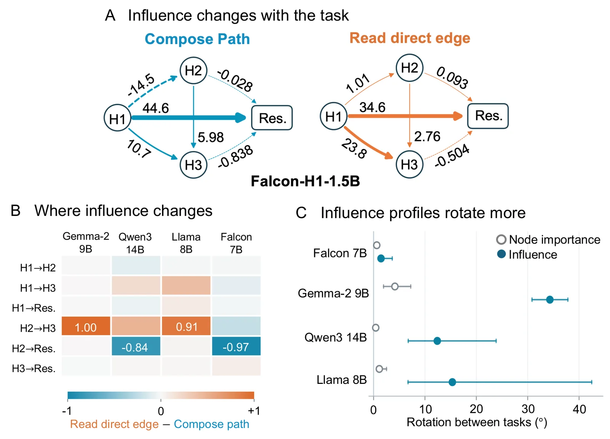
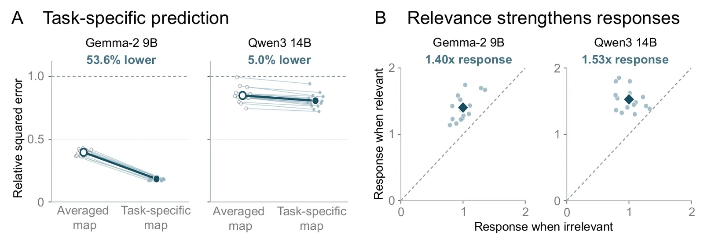

O Paradoxo da Reutilização de Circuitos
Os modelos de linguagem de grande escala (LLMs) são notáveis por sua capacidade de realizar tarefas diversas usando um único conjunto fixo de parâmetros. Ao contrário dos modelos tradicionais que exigem retreinamento para novas funções, os LLMs adaptam-se no momento da inferência através de instruções ou exemplos no contexto (in-context learning). No entanto, essa flexibilidade levanta uma questão mecânica fundamental: se os mesmos componentes internos, como as cabeças de atenção, são reutilizados para tarefas diferentes, o que exatamente muda entre elas?
Análises de circuitos anteriores sugeriram que tarefas distintas podem compartilhar partes substanciais do mesmo circuito computacional. Isso implica que um único cabeçote de atenção pode estar presente em múltiplos fluxos de processamento. Mas identificar que um componente é compartilhado não explica como ele opera de maneira diferente em cada contexto. É como saber que o mesmo cérebro participa de tarefas distintas sem entender como as conexões entre suas regiões se reorganizam para suportar ações diferentes.
Este paper, intitulado "Task Context Shapes Component Roles in Language Models" e escrito por Sovesh Mohapatra e Dani S. Bassett, da University of Pennsylvania e Yale University, propõe uma analogia com a neurociência de redes. No cérebro, regiões compartilhadas suportam diferentes tarefas através de mudanças nas interações entre elas, conhecidas como conectividade funcional. Os autores aplicam essa perspectiva aos LLMs, investigando se o contexto da tarefa altera não apenas quais fatos um componente responde, mas também como sua saída influencia a computação subsequente.

Metodologia: Isolando o Contexto dos Dados
Para isolar o efeito do contexto, os autores projetaram um cenário experimental rigoroso. Eles utilizam prompts baseados em fatos de grafos direcionados simples. Cada prompt apresenta três fatos sobre a presença ou ausência de arestas entre nós A, B e C (especificamente A→B, B→C e A→C). O modelo deve responder Verdadeiro ou Falso com base em duas tarefas distintas: 'Compose path', que verifica se o caminho A→B→C existe, e 'Read direct edge', que verifica se a aresta direta A→C existe.
A chave do experimento é que ambos os prompts compartilham exatamente os mesmos fatos de entrada e a mesma chave de resposta. A única diferença é a instrução da tarefa. Isso cria condições de "resposta oposta" (opposite-answer graphs), onde os mesmos dados de entrada levam a respostas corretas diferentes dependendo da instrução. Essa configuração é análoga a ensaios incongruentes em tomada de decisão humana, onde regras de tarefa diferentes favorecem escolhas opostas a partir dos mesmos estímulos.
Os autores medem dois conceitos distintos para cada componente do modelo: 'influência' e 'importância'. A influência é definida como a resposta assinada em um site posterior por unidade de perturbação na fonte. Em termos práticos, eles aplicam deslocamentos positivos e negativos nas ativações de cabeças de atenção específicas e medem como isso afeta as ativações em camadas posteriores ou o stream residual. A importância, por outro lado, mede a diminuição na margem de logit da resposta correta quando a ativação completa de um site é substituída por sua média. Enquanto a importância mede a contribuição para a resposta final, a influência mede a dinâmica causal entre componentes internos.
Resultados: A Influência se Redistribui
Os resultados mostram claramente que a mudança de instrução redistribui a influência entre os componentes compartilhados. Por exemplo, no modelo Falcon-H1-1.5B, a influência média do cabeçote H1 sobre H2 muda de -0,0145 sob a instrução 'Compose path' para 0,00101 sob 'Read direct edge'. O mesmo cabeçote H1 mais que dobra sua influência sobre H3 (de 0,0107 para 0,0238) e reduz sua influência sobre o site residual posterior (de 0,0446 para 0,0346). Esses efeitos são observados consistentemente em cinco modelos open-weight que abrangem quatro famílias diferentes (Gemma, Qwen, Llama, Falcon) e tamanhos de 1,5 a 14 bilhões de parâmetros.
Além da influência, os perfis de importância também mudam, mas em menor grau. Ao comparar os ângulos entre os perfis de influência e importância antes e depois da mudança de tarefa, os autores descobriram que as influências rotacionam mais do que as importâncias. Em Gemma, a diferença média nos ângulos foi de 30,17 graus, e em Qwen, de 11,98 graus. Isso sugere que a reconfiguração das interações causais internas é mais pronunciada do que a mudança na contribuição direta para a resposta final.
A análise de resposta condicional também revelou nuances importantes. Em modelos ajustados (fine-tuned) para tarefas de grafos, o efeito de uma intervenção factual era mais forte quando o fato alvo determinava a resposta correta. No entanto, a restauração downstream reduziu a seletividade da tarefa mais do que os controles, indicando que a informação é processada de forma integrada e não isolada. A magnitude desses efeitos variou entre Gemma-2-9B e Qwen3-14B, com Qwen mostrando efeitos de logit significativamente maiores para as mesmas intervenções.

Editando o Estado Interno da Tarefa
O achado mais contundente do paper vem de uma intervenção direta no estado interno do modelo. Os autores adicionaram um vetor de mudança de tarefa (a diferença média de ativação entre as duas instruções) às ativações iniciais do modelo, sem alterar o prompt escrito ou os pesos do modelo. Esse 'hack' de ativação forçou o modelo a adotar o estado interno da tarefa oposta.
Em Gemma-2-9B e Qwen3-14B, essa edição simples redirecionou completamente as respostas factuais. Sob a instrução escrita 'Read fact 1', os cabeçotes H2 e H3 tornaram-se altamente responsivos ao 'Fact 2' após a edição. No Gemma, a participação da resposta ao Fact 2 aumentou em 78,9 pontos percentuais no H2 e 97,1 pontos percentuais no H3. O Qwen mostrou aumentos semelhantes de 68,7% e 91,8%, respectivamente.
Isso prova que o contexto da tarefa não é apenas um filtro superficial, mas redefine quais informações factuais os componentes compartilhados processam. O modelo manteve a resposta correta em prompts onde a tarefa interna editada correspondia à instrução escrita, mas inverteu a resposta em prompts de resposta oposta. Isso demonstra que o estado interno da tarefa atua como um 'interruptor' que determina a utilidade relativa dos fatos disponíveis no contexto.
Previsão e Mapas de Resposta
Se o contexto da tarefa redefine as interações entre componentes, então previsões baseadas nessas interações devem ser mais precisas quando o contexto é correspondido. Os autores construíram mapas de resposta linear para cada condição de tarefa, prevendo a resposta de um cabeçote posterior a partir de uma mudança medida em um cabeçote anterior.
Ao testar esses mapas em uma intervenção factual separada, eles descobriram que o mapa específico da condição reduziu o erro quadrático médio de previsão em 53,6% no Gemma e 5,0% no Qwen, comparado à média dos dois mapas (um para cada tarefa). Embora a melhoria no Qwen seja modesta, a redução no Gemma é substancial, indicando que a correspondência do estado interno da tarefa é crucial para modelar com precisão como as intervenções se propagam pela rede.
Esses resultados suportam a visão de rede da computação em LLMs. Assim como no cérebro, onde a conectividade funcional prediz a atividade de uma região baseada em outras, nos LLMs as interações entre cabeças de atenção são altamente dependentes do contexto computacional atual. Ignorar essa dependência contextual leva a modelos preditivos menos precisos e a uma compreensão incompleta do mecanismo interno.

Limitações e Escopo
Apesar dos insights robustos, o estudo tem limitações claras. A análise foi conduzida em um domínio simplificado de grafos direcionados, onde a relevância factual é explícita e binária. Não está claro se esses padrões de reconfiguração de influência se generalizam para tarefas de linguagem natural mais complexas, como geração de texto livre ou raciocínio lógico extenso, onde a relevância da informação é mais difusa e contextual.
Além disso, as medições de influência são sensíveis à direção de ativação escolhida e ao tamanho da perturbação aplicada. Os autores usam um desvio de duas unidades, definido por um desvio padrão das ativações de referência. Mudanças nesses parâmetros poderiam alterar a magnitude observada das influências, embora a tendência de redistribuição provavelmente permaneça. A interpretação dos valores de influência está, portanto, atrelada a essas escolhas metodológicas específicas.
Outra limitação é que a análise de resposta condicional foi realizada em modelos fine-tuned, enquanto as intervenções factuais e de edição interna usaram modelos base (sem treinamento adicional). Embora isso demonstre a robustez do fenômeno em diferentes configurações, a interação exata entre fine-tuning e reconfiguração de contexto permanece menos explorada. O paper também não investiga se esses mapas de resposta podem ser transferidos para prompts completamente novos sem recalibração, uma questão importante para a aplicabilidade prática.
Conclusão e Direções Futuras
Este paper estabelece que os componentes compartilhados em LLMs não são apenas reutilizados, mas reconfigurados. O contexto da tarefa muda quais fatos os cabeçotes de atenção leem e como suas saídas influenciam a computação subsequente. Essa dependência contextual é fundamental para entender como os modelos usam parâmetros compartilhados para realizar computações diferentes.
Para o futuro, os autores sugerem estender essas medições para prompts mais longos e textos com múltiplos passos de raciocínio, onde a relevância factual depende de declarações intermediárias. Além disso, testar se os mapas de resposta podem prever respostas em novos grafos e instruções sem recalibração por prompt será crucial para determinar o quão generalizável é essa interação dependente de contexto.
Do ponto de vista prático, a compreensão da influência dependente de tarefa pode guiar intervenções mais precisas. Se podemos identificar quais conexões são críticas para uma tarefa específica, talvez seja possível alterar um comportamento indesejado do modelo sem prejudicar outras capacidades, mantendo a integridade do circuito compartilhado. Isso abre caminho para métodos de alinhamento e correção de viés mais cirúrgicos e eficazes.
O que fica
- Cabeças de atenção fixas mudam sua 'influência' (como afetam o futuro) e 'importância' (contribuição para a resposta) conforme a tarefa muda, mesmo com os mesmos dados de entrada.
- Editar internamente o estado da tarefa faz o modelo ler fatos diferentes sem alterar o prompt escrito, provando que o contexto interno redefine o processamento.
- Mapas de resposta linear específicos da tarefa preveem erros quadráticos médios 53,6% melhor do que mapas genéricos, indicando que a interação entre componentes é altamente dependente do contexto.
- A análise compara cinco modelos abertos (Gemma, Qwen, Llama, Falcon) de 1,5 a 14 bilhões de parâmetros, mostrando que esse fenômeno é generalizável e não restrito a uma única arquitetura.
Paper original: Task Context Shapes Component Roles in Language Models
Comentários
Nenhum comentário ainda. Seja o primeiro.